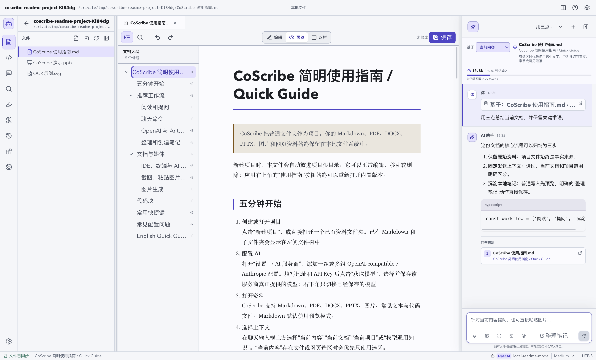

文档与知识工作
DocMind01
让文档任务形成
完整的证据闭环。
将 Agent 任务执行、RAG 公开基准评测与逐结论证据检查串联起来。从检索到交付，让回答的依据可以回到原文。
PythonFastAPILangGraph
查看项目 DOCMIND / CORE LOOP
01
任务驱动
计划 · 工具调用 · 审批与恢复
02
评测驱动
基线对比 · Badcase · 回归验证
03
逐结论证据检查
原文引用 · 冲突披露 · 弱证据处理
SELECTED WORK
从一个问题出发，把想法做成可以使用的工具。
让文档任务形成
完整的证据闭环。
将 Agent 任务执行、RAG 公开基准评测与逐结论证据检查串联起来。从检索到交付，让回答的依据可以回到原文。
计划 · 工具调用 · 审批与恢复
基线对比 · Badcase · 回归验证
原文引用 · 冲突披露 · 弱证据处理

把本地资料、AI 对话和长期笔记放进同一个工作台。以普通文件夹为项目，让阅读与研究成果回到标准 Markdown。
› 从开发任务开始
补丁 → 检查 → 差异确认
根据任务边界，在 FastPath 与 Full Agent 之间选择执行方式。在隔离工作区检查补丁，再展示差异供用户确认。
面向多跳问答的轻量原型，手写编排串联 Router、Planner、混合检索与 Critic，探索证据不足时的追问路径。